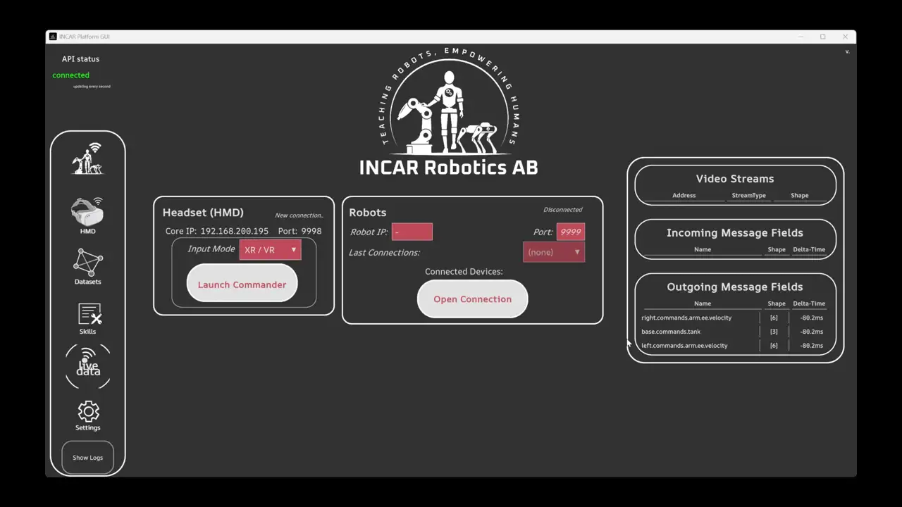
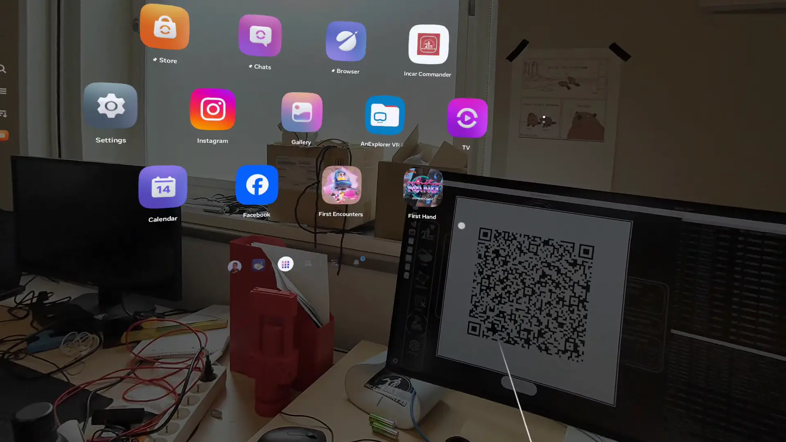
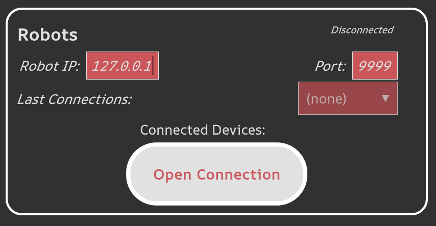
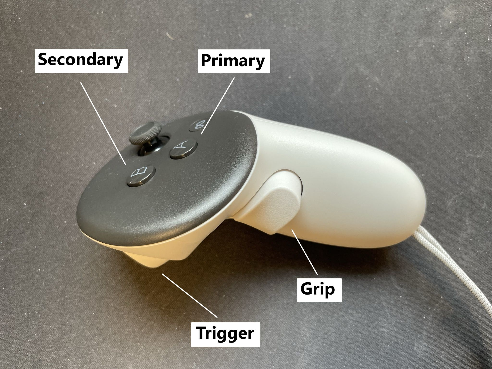
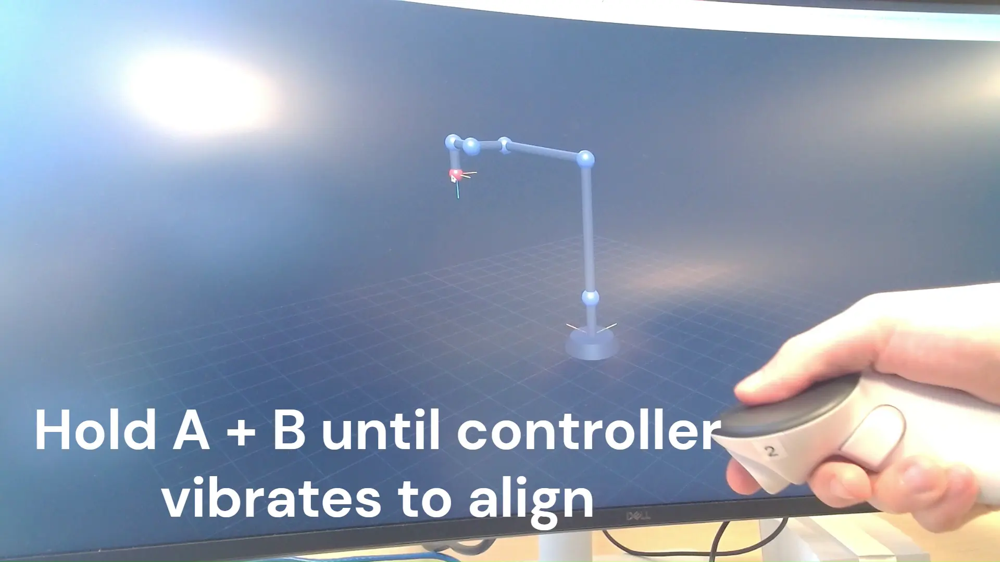

First Steps
We will get started by teleoperating a simulated dummy robot. First, open a terminal and start the Incar Skill System.
# Remember to source the environment first with $ `source [path_to_env]/bin/activate`
incar run
# Remember to source the environment first with $ `[path_to_env]\Scripts\activate`
incar run
Connecting a input device
On the GUI, you can select input mode 'XR/VR' from the dropdown. This will display a QR code on the screen to be scanned by the headset.

In order to scan the QR code, go to teleop.incar-robotics.se in the headset's browser and follow the steps appearing on screen. Make sure the PC and the headset are on the same network!
Camera is not opening
Make sure to click 'allow' on the prompt for camera access on the bottom of the window. If you accidentally denied camera access, you need to clear the browser cache.
Unable to enter XR mode
Make sure to click 'allow' on the prompt for XR access on the bottom of the window. If you accidentally denied camera access, you need to clear the browser cache.

Save teleop.incar-robotics.se to the library
You can save the teleop page to your library for easy access by pressing the three dots in the top right corner > add to library.

On the GUI, select your prefered input device. When teleoperating, make sure that you focus the GUI window, otherwise inputs will be ignored. The GUI will show the teleoperation mappings for the selected device.
It is possible to setup a custom input device
Connect the robot
In a second terminal, run the robotdummy:
# Remember to source the environment first with $ `source [path_to_env]/bin/activate`
incar robotdummy
# Remember to source the environment first with $ `[path_to_env]\Scripts\activate`
incar robotdummy
In the GUI, connect to the robot dummy using the local host ip (127.0.0.1)

Controls
You can now see your teleop commands executed by the robot dummy: If you press the grip + primary button, velocity commands are streamed to the robot dummy. You can 'anchor' the origin to the current controller pose by pressing primary + secondary button until the controller vibrates. In other words, you can define which direction is forward and ensure this direction is aligned with the robot base frame.
Button Labels


Robot is not moving?
Make sure that you are also pressing the grip + primary button to allow the streaming!
Tip
In order to prevent the headset from disconnecting, we suggest turning off the sleep and boundary settings of the headset
When teleoperating, make sure that you focus the GUI window, otherwise inputs will be ignored. The GUI will show the teleoperation mappings for the selected device.
For custom input devices, the controls are defined by your code.
Next step: set up a workspace.